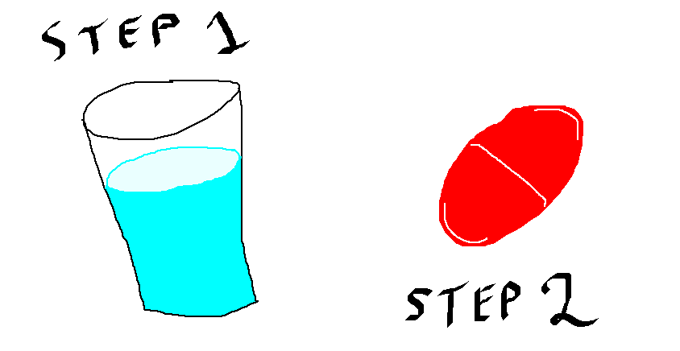
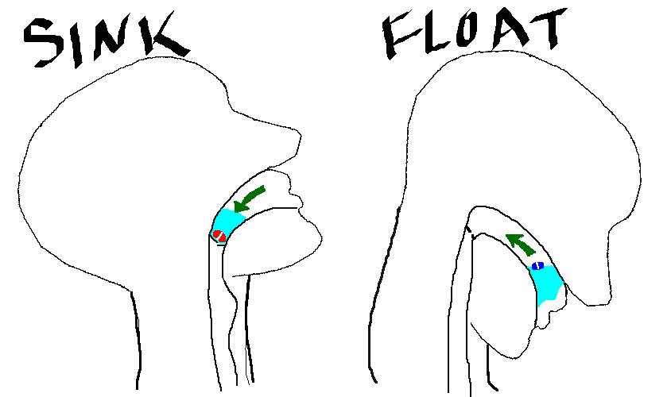

The typical pill-taker puts the pill in their mouth first, then chugs a bunch of water in an attempt to swallow it. This is wrong. By sipping, a turbulent flow of water hits the pill, jostling it around and making it difficult to swallow.
A better approach is to sip the water first, holding a small amount of water in the mouth. Then, the pill can be inserted and swallowed without any turbulence.
Not all pills are the same. Some — like vitamins — are dense and sink in water, while others — such as capsules — are filled with air and light enough to float.
To swallow dense pills, the optimal position is with the head tilted back. The pill will naturally sink towards the esophagus, and making swallowing easy.
Likewise, to swallow light pills, tilt the head down. The pill will rise, again towards the esophagus.
